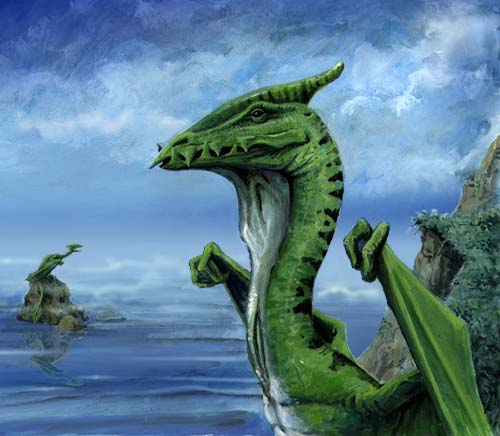

| Climate/Terrain | Scogliere rocciose di mari ed oceani |
| Frequency | Rare |
| Organization | Group |
| Activity Cycle | Day |
| Diet | Carnivoro |
| Intelligence | Low Intelligence (5 - 7) |
| Treasure | Vedi Sotto (solo nella tana) |
| Alignment | Neutral |
| No. Appearing | 1d4 |
| Armor Class | 4 |
| Movement | 6, Sw. 15, Fl. 9 |
| Hit Dice | 6 + 1 |
| Thac0 | 14 |
| No. of Attacks | 1 Morso |
| Damage / Attacks | 1d10 |
| Special Attacks | Scossa elettrica |
| Special Defenses | Vedi Sotto |
| Magic Resistance | 20 % |
| Size | Huge (5 m. lunghi, ap. alare 7 m.) |
| Morale | Elite (13) |
| XP value | 750 |
Descrizione
I Coastal Drakes sono fra i più antichi esseri viventi. Venuti dal mare si sono abituati a vivere lungo le scogliere rocciose battute dai freddi venti areliani. Sono lunghi quasi cinque metri ed hanno una colorazione verde scuro con striature nere. Sono caratterizzati da un corno coperto di pelle sulla loro testa e da una grossa sacca alla base della gola. Le loro scaglie sono di color verde scuro con striature nere.
Combat
Queste creature sono formidabili nuotatori e, quando è possibile, cacciano prede in acqua o scappano in caso di pericolo in mare scendendo a grande profondità. Possono respirare solo fuori dall'acqua ma possono trattenere il respiro anche per un'ora in immersione. Col le ali possono anche volare ma sono lenti e si stancano presto, fanno, quindi, solo piccoli voli quando occorre (per esempio per raggiungere le loro tane, per scappare). Raramente volano a più di 15 metri di quota, in alcuni casi volano sulle onde per individuare le loro prede nell'acqua prima di tuffarsi e raggiungerle a nuoto.
Questi drakes non sono dotati di soffio ma, a volte, quando mordono scaricano una potente scossa elettrica sulla vittima. Ciò avviene se con il tiro del dado di danno effettuano un 7,8,9 o 10. Quando scaricano la scossa provocano ulteriori 2d4 danni da elettricità, la vittima inoltre deve superare un tiro salvezza contro raggio della morte oppure oltre ad aver subito i danni resterà incapacitata (incapacitated) nei successivi 1d4 rounds.
Il Coastal Drake è totalmente immune agli effetti dell'acqua (e quindi alle magie di evocation water), inoltre è resistente al freddo e all'elettricità, dimezza, quindi, tutti i danni di questo tipo ed, in ogni caso, assorbe i primi tre di questi danni.
Habitat/Society
I Coastal Drakes vivono in piccoli gruppi sulle coste. Molto raramente si spingono nell'interno essendo il loro legame con l'acqua molto stretto. Sono forti cacciatori e si nutrono sia di pesci (anche grandi come squali o mammiferi marini come foche e delfini) che di animali terrestri che si avvicinano alle loro tane.
Sono animali molto territoriali e non esitano ad attaccare chi invade il loro territorio. Le loro tane sono spesso situate su rocce a picco sul mare raggiungibili solo volando.
Ecology
Collezionano perle ed oggetti lucenti che usano per abbellire le loro tane. La loro pelle è particolarmente ricercata in quanto con le loro scaglie è possibile produrre ottime corazze speciali.
Mystical Resource Sourge
(Ghiadola Elettrica) Quantità: 1, Presenza 33% - Effetto Particolare:
Elettricità
- Qualità della Risorsa:
Common.
Mystical Resource Sourge
(Membrana delle Ali) Quantità: 1, Presenza 33% - Effetto Particolare (si tiri a
sorte dopo l'estrazione tra i seguenti):
Resistenza ad Elettricità, Resistenza al Freddo- Qualità della Risorsa:
Common.
Mystical Resource Sourge
(Cuore) Quantità: 1, Presenza 50% - Scuola di Magia:
Enchantment
- Qualità della Risorsa:
Common.
Tesoro
|
Tipo di tesoro |
Tana di Coastal Drake (solitario) |
| Copper | none |
| Silver | 1000-4000 (35%) |
| Gold | 1000-3000 (30%) |
| Platinum | 100-600 (30%) |
| Gems | 2d4 perle (30%) tirare per ognuna: 1-5 bianca (100) 6-8 rosa (250) 9-10 nera (500) |
| Art Ojects | 1 (15%) |
| Magical Items | 1d2 (in nessun caso pergamene) (10%) |